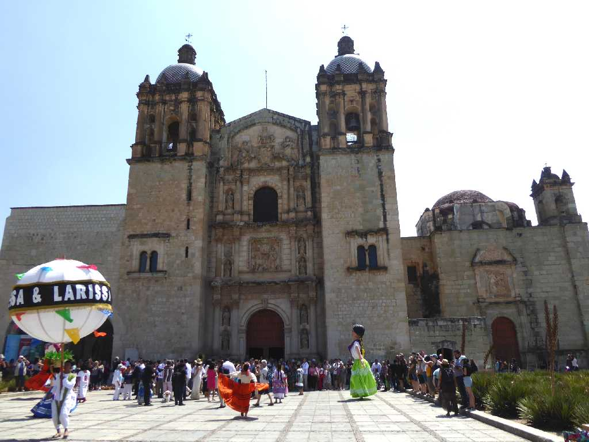
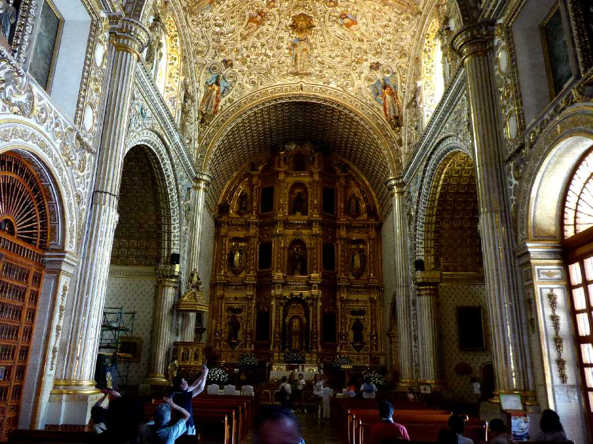
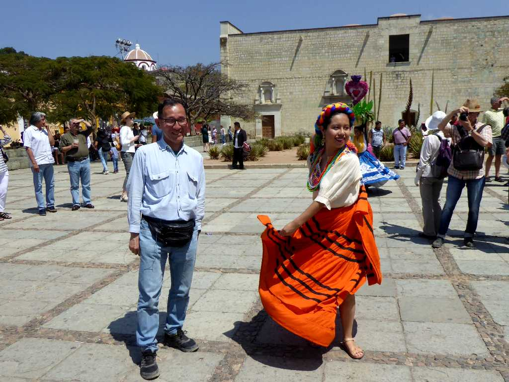
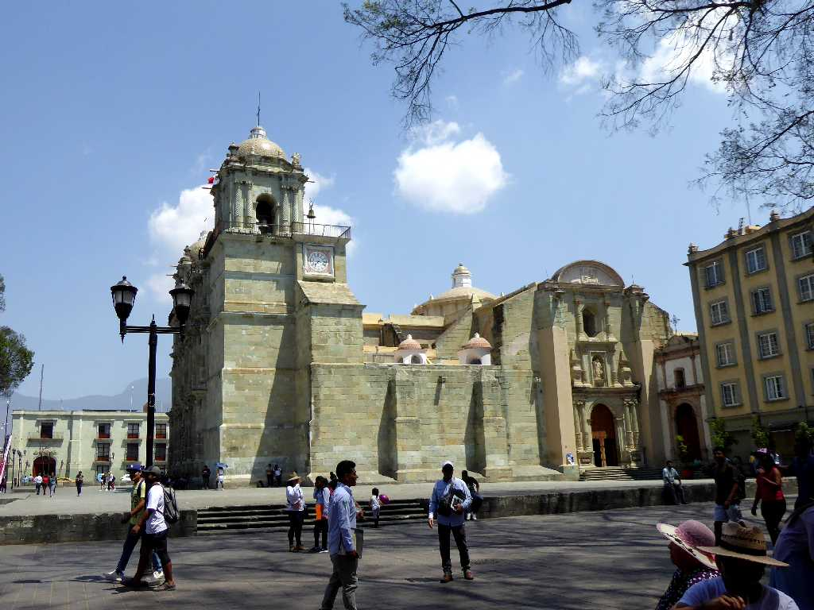
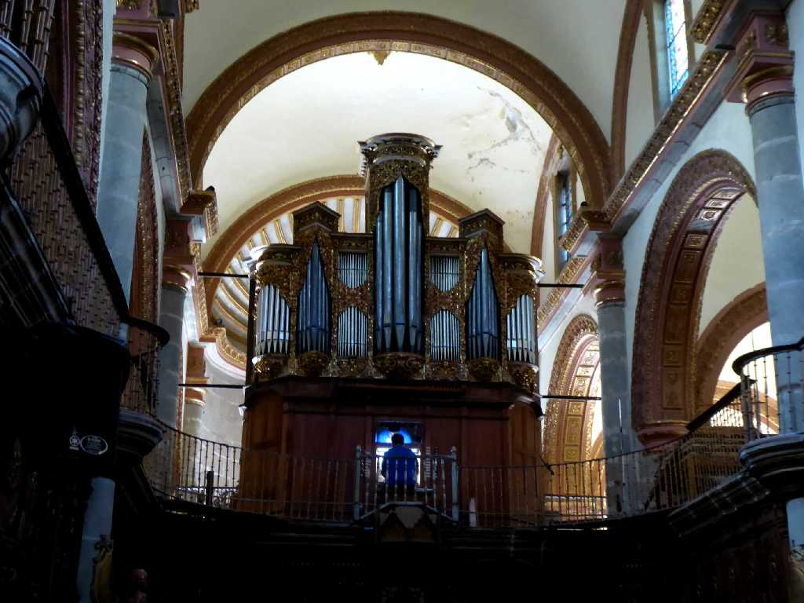
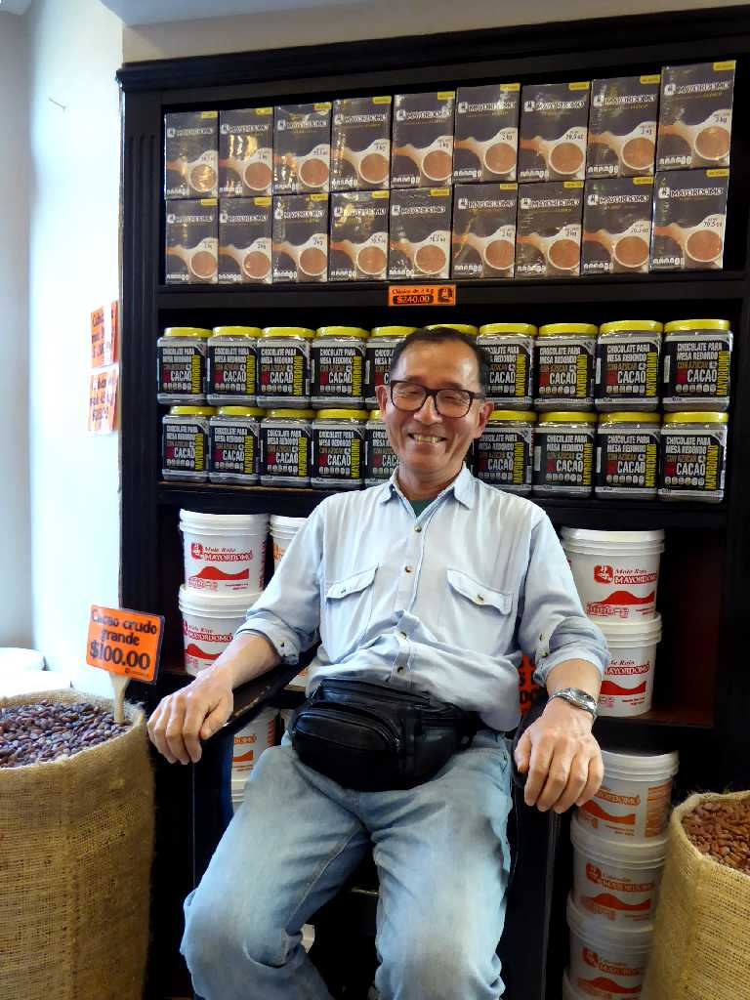

Templo de Santo Domingo de Guzmán Oaxaca
オアハカ歴史地区のサント・ドミンゴ・デ・グスマン聖堂

Altar Templo de Santo Domingo de Guzmán
１５７５年に建設が始まり１８世紀まで２００年を費やし創られた内装が美しいドミニカ会のバロック様式教会と修道院

March 14 2020 Oaxaca

Catedral Metropolitana de Nuestra Señora de la Asunción Oaxaca
１５３５年に建設が始まり１８世紀まで２００年を費やし創られた聖母被昇天大聖堂

Órgano de tubos Catedral Metropolitana de Nuestra Señora de la Asunción
ミサ曲を堪能

March 14 2020 Mercado de Benito Juarez
オアハカはカカオの名産地でベニートファレス市場のカカオ豆の名店にて